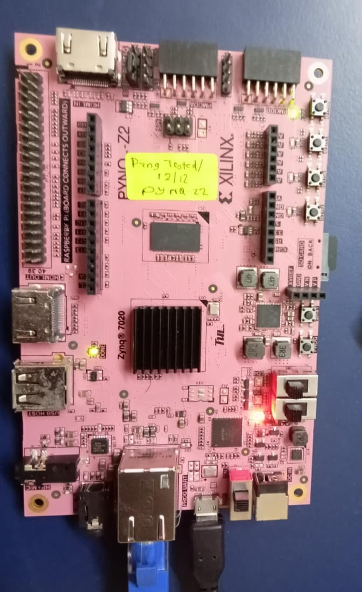

This project implements a dual-clock asynchronous FIFO in Verilog-2001, for transferring data between two clock domains that have no fixed timing relationship. Pointers are Gray coded and passed through two-flop synchronisers, so that a pointer sampled by the opposite domain is never a value the counter did not actually hold.
The design was verified with a randomised scoreboard testbench under ModelSim, checked with nine SystemVerilog assertions and functional coverage under Vivado XSim, and synthesised for the Zynq XC7Z020 with no inferred latches and no warnings. It was then implemented on a PYNQ-Z2 board, with the write domain clocked from the processing system PLL and the read domain from the board's independent 125 MHz oscillator, where it transferred 286,176,459 words with zero errors while reaching both the full and empty conditions.
Most digital systems contain more than one clock. A processor runs at one frequency, an interface at another, and data has to pass between them. Where two clocks have no fixed phase relationship, a signal sampled by the receiving domain may be captured while it is still changing, and the value read can be one that was never actually present.
An asynchronous FIFO is the standard structure used to cross such a boundary. It buffers data between the two domains and reports to each side whether it is safe to write or to read. The difficulty is that the full and empty conditions depend on comparing pointers maintained in different clock domains, so those pointers must themselves cross safely.
Two mechanisms are used together. Gray coding ensures that consecutive pointer values differ in exactly one bit, so a pointer sampled mid-transition returns either the old value or the new one. Two-flop synchronisers give a flip-flop that has been driven into a metastable state a full clock period to settle before anything downstream uses its output. Gray coding does not prevent metastability, and a synchroniser does not prevent multi-bit skew, so both are required.
To design a parameterised dual-clock asynchronous FIFO in Verilog, verify it in simulation with a scoreboard and with assertions, confirm through synthesis that the implementation matches the intent, and demonstrate it running on an FPGA with two independent clock sources.
The design consists of two files. sync_2ff.v is a parameterised
two-flop synchroniser, kept as a separate module so that its use is explicit, and
async_fifo.v contains the memory, the two pointer counters, the Gray
conversion and the flag logic. The structure follows the standard arrangement
described by Cummings [1].
Pointers are ASIZE+1 bits wide while the memory address uses only
the low ASIZE bits. The extra most-significant bit acts as a wrap
flag, and it is the only thing that distinguishes the full condition from the
empty condition, since the addresses are equal in both cases. Conversion to Gray
code is a single exclusive-or with a right shift:
The FIFO is empty when the read pointer has caught the write pointer with no wrap between them, so every bit of the two Gray pointers agrees:
The FIFO is full when the write pointer has wrapped once more than the read pointer and caught it. In Gray code this requires the low bits to agree while the top two bits are inverted:
Two bits are inverted, not one. In Gray code both the top bit and the bit below it change when the counter passes the halfway point, so inverting only the most-significant bit would detect that halfway crossing rather than the wrap.
Both flags are computed from the next pointer value rather than the registered one, so they assert on the same clock edge on which the FIFO actually becomes full or empty. Because each domain sees a copy of the opposite pointer that is two clocks old, the FIFO may report itself full slightly after space has been freed, or empty slightly after a word has been written. The error is always in the safe direction, which is why the design cannot overflow or underflow.
| Signal | Dir | Domain | Function |
|---|---|---|---|
| wclk, wrst_n | in | write | Write clock and active-low asynchronous reset |
| winc | in | write | Write request, ignored when wfull is asserted |
| wdata | in | write | Write data, DSIZE bits |
| wfull | out | write | FIFO cannot accept a further word |
| rclk, rrst_n | in | read | Read clock and active-low asynchronous reset |
| rinc | in | read | Read request, ignored when rempty is asserted |
| rdata | out | read | Read data, valid whenever rempty is low |
| rempty | out | read | FIFO holds no unread word |
The FIFO is parameterised in data width (DSIZE) and address width
(ASIZE). All results reported here use an eight-bit datapath and a
depth of sixteen words.
A single directed test establishes little about a clock-crossing design, so the testbench stalls both interfaces pseudo-randomly and runs the two clocks at a ratio the design was not written for. Two phases execute in one simulation: a fast writer against a slow reader, at 7 ns and 11 ns, and then the reverse. Periods such as 10 ns and 20 ns were avoided because their edges align periodically, which would hide the behaviour the test is meant to exercise.
A reference queue is pushed on the write side, and popped and compared on the read side. Each phase ends by stopping the writes and reading until the FIFO is empty, so that every word written is compared on the way out. Without this drain a few hundred words remain in the FIFO at the end of a phase and are never checked.
ModelSim ASE supports neither SystemVerilog assertions nor covergroups, so the
assertion layer runs under Vivado XSim against the same design and the same
testbench. The checker is attached using bind, so no verification
code appears in the synthesisable source. Nine properties are checked.
| Property | Statement |
|---|---|
| a_wgray_one_bit | Write Gray pointer changes at most one bit per cycle |
| a_rgray_one_bit | Read Gray pointer changes at most one bit per cycle |
| a_no_overflow | Occupancy never exceeds the configured depth |
| a_no_write_when_full | Write pointer does not advance while full |
| a_no_read_when_empty | Read pointer does not advance while empty |
| a_wptr_step | Write pointer holds or advances by exactly one |
| a_rptr_step | Read pointer holds or advances by exactly one |
| a_reset_not_full | wfull is deasserted during reset |
| a_reset_empty | rempty is asserted during reset |
Four covergroups record whether the interesting conditions were actually reached: the write and read interfaces crossed with their request signals, the occupancy distribution including both the empty and the full bins, and concurrent activity on both interfaces. A test that passes without ever filling or emptying the FIFO demonstrates very little, so coverage is reported alongside every result.
To confirm that the verification is capable of detecting a defect, the full
comparison of Equation (3) was deliberately altered to invert only the
most-significant bit, and the whole flow was re-run. The scoreboard and the
occupancy check reported failures within 500 ns of simulation time, and under XSim
the a_no_overflow assertion reported occupancy 17 exceeds depth
16. The correct comparison was then restored.
| Metric | ModelSim | XSim |
|---|---|---|
| Words written and compared | 10,017 | 10,015 |
| Data mismatches | 0 | 0 |
| Overflows / underflows | 0 / 0 | 0 / 0 |
| Assertion failures | not supported | 0 |
| Functional coverage | not supported | 100 % |
| Cycles at full / at empty | 12,678 / 12,419 | — |
Both boundary conditions were reached in quantity, which is what makes the zero
mismatch count meaningful. The word counts differ slightly between the two
simulators because the stimulus is randomised and their implementations of
$urandom do not produce identical sequences from the same seed.
| Metric | Value | Notes |
|---|---|---|
| Errors / warnings / critical warnings | 0 / 0 / 0 | Clean elaboration |
| Latches inferred | 0 | Explicitly checked |
| Slice LUTs | 28 | 20 logic, 8 distributed RAM |
| Slice registers | 40 | All flip-flops |
| Block RAM / DSP | 0 / 0 | Memory in distributed RAM |
The sixteen-by-eight memory was mapped to distributed RAM rather than a block
RAM, which is expected at this size. Vivado's CDC report located both crossings,
each at synchroniser depth two and each carrying the ASYNC_REG
property, confirming that the synchronisers were implemented as intended.
The design was implemented on a PYNQ-Z2 board. A linear-feedback shift register generates the write data and an identical register on the read side predicts what should be returned, so any mismatch is counted as an error. A second pair of registers stalls both interfaces so that the full and empty conditions are reached, and the counters are read back over JTAG.
The write domain is clocked from FCLK_CLK0, produced by the
processing system PLL from the 33.333 MHz crystal, and the read domain from the
board's separate 125 MHz oscillator. The two sources are independent, so the phase
between them drifts continuously rather than repeating, which is the condition the
design is intended to tolerate.
| Phase | Words written | Words read | Errors |
|---|---|---|---|
| 1 — write fast, read slow | 159,905,237 | 159,905,221 | 0 |
| 2 — write slow, read fast | 286,176,459 | 286,176,459 | 0 |
| Reached full / empty | yes / yes | ||
| Worst setup slack (WNS) | 1.997 ns | ||
| Worst hold slack (WHS) | 0.061 ns | ||
-- phase 1 write fast, read slow: w_rate 15/16, r_rate 2/16, 10 s words written 159905237 read 159905221 errors 0 full seen 1 empty seen 1 -- phase 2 write slow, read fast: w_rate 2/16, r_rate 15/16, 10 s words written 286176459 read 286176459 errors 0 full seen 1 empty seen 1 ============================================================= HARDWARE RESULT PYNQ-Z2, xc7z020clg400-1 ============================================================= wclk FCLK_CLK0, 100 MHz off the PS PLL rclk sys_clk, 125 MHz board oscillator independent crystals, so the phase between them drifts words written 286176459 words read+checked 286176459 data errors 0 reached full yes reached empty yes ------------------------------------------------------------- PASS =============================================================
results/hardware_test.txt.
DONE marking shows that the FPGA fabric has been
configured, and the user LED near the top of the board is driven by the test logic. The
board is attached to the host over the USB JTAG link, which is the only connection the
flow uses; no SD card is fitted, because the processing system is started over JTAG
solely to supply FCLK_CLK0.Phase 1 finishes sixteen words short of the number written, which is exactly the depth of the FIFO. That phase ends with the writer running at full rate against a slow reader, so the FIFO is full when writing stops and is still holding sixteen unread words. Phase 2 reverses the rates, the reader drains those words and then keeps pace, and the two totals finish equal.
A parameterised dual-clock asynchronous FIFO was designed in Verilog-2001 and verified at three levels. In simulation it transferred 10,017 words with no mismatches across both clock ratios, with nine assertions passing and full functional coverage. Synthesis for the Zynq XC7Z020 produced no warnings and inferred no latches, and the CDC report confirmed both crossings at synchroniser depth two. On hardware, driven by two independent oscillators, it transferred 286,176,459 words with zero errors while reaching both the full and empty conditions.
The parts of the design requiring most care are the pointer width and the full comparison. The extra pointer bit is what allows full and empty to be distinguished when the addresses are identical, and the full condition requires the top two Gray bits to be inverted rather than one. Deliberately introducing an error into that comparison confirmed that the testbench and the assertions detect it, which is what gives the passing results their value.